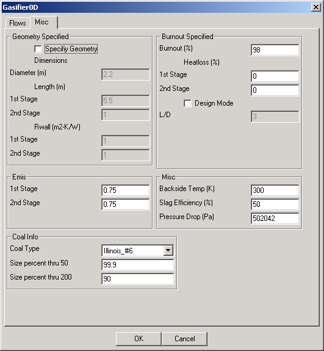

| 
|
The Miscellaneous folder controls the calculation mode of the model. If
the Specify Geometry button is selected, dimensions of the gasifier
and the wall thermal resistance, Rwall, are input. Otherwise, the
percent Burnout is input. With the Specify Geometry button
unselected, the Design Mode button is available where, if selected,
the user specifies the length over diameter ratio ( L/D) and the model
calculates the dimensions required to produce the specified Burnout.
These results would be reported along with other module results.
Stage Emis are also specified in this folder, as well as Backside
Temp, Slag Efficiency, and Pressure Drop. The Coal
Type input allows the user to select coal characteristics from a
number of pre-programmed coal types. Coal choices include:
-
E-Gas AppLS
-
E-Gas AppMS
-
E-Gas_Illinois_#6
-
E-Gas_Utah
-
E-Gas_Wyodak
-
E-Gas_Wyoming
-
Illinois_#5
-
Illinois_#6
-
Petcoke
-
Pike_County
-
Pittsburg_#8
-
Pocahantas_#3
|